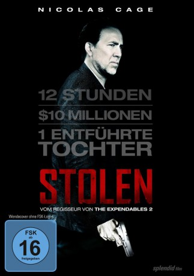

#1969 Stolen
 gesehen am 16.09.2015
gesehen am 16.09.2015
 
 IMDB-Wertung: 5.5 / 10
IMDB-Wertung: 5.5 / 10  Metascore: 43
Metascore: 43 
Seine achtjährige Haftstrafe gerade erst abgesessen und eigentlich nur Ruhe suchend, wird Ex-Meisterdieb Will Montgomery von seiner dunklen Vergangenheit eingeholt. Der ehemalige Verbrecherkollege Vincent erpresst ihn und hält Montgomerys Tochter Alison in einem gestohlenen Taxi als Geisel fest. Diese lässt er nur frei, wenn Will ihm das Versteck der zehn Millionen Dollar aus ihrem letzten gemeinsamen Raubüberfall nennt. Will würde für das Leben seiner Tochter durch die Hölle gehen. Noch nichts von seinem Job verlernt und in Topform setzt er sich auf die Fährte des Kidnappers, um Alison zu retten...
Jahr: 2012
Dauer: 96 Minuten
FSK: 16
Land: USA Studio: Millennium FilmsTonspuren: DTS - ,
Untertitel: Deutsch,
Auflösung: 720p (1280x544) Größe: 3543 MB
Genre: Action, Thriller, Drama, Krimi
Regisseur:  Simon West
Simon West
Drehbuch: David Guggenheim
Soundtrack: Mark Isham
Darsteller:
 Nicolas Cage als Will Montgomery
Nicolas Cage als Will Montgomery Josh Lucas als Vincent
Josh Lucas als Vincent Danny Huston als Tim Harlend
Danny Huston als Tim Harlend Malin Akerman als Riley Jeffers
Malin Akerman als Riley Jeffers Sami Gayle als Alison Loeb
Sami Gayle als Alison Loeb Mark Valley als Fletcher
Mark Valley als Fletcher Barry Shabaka Henley als Reginald
Barry Shabaka Henley als Reginald M.C. Gainey als Hoyt
M.C. Gainey als Hoyt J.D. Evermore als Rookie
J.D. Evermore als Rookie Garrett Hines als Aaron
Garrett Hines als Aaron Kevin Foster als Motorcycle Cop
Kevin Foster als Motorcycle Cop- Tanc Sade als Pete
- Dan Braverman als Lefleur
 Jon Eyez als Bertrand
Jon Eyez als Bertrand Marcus Lyle Brown als Matthews
Marcus Lyle Brown als Matthews Matt Nolan als Tessler
Matt Nolan als Tessler Tyler Forrest als Teenage Cab Driver
Tyler Forrest als Teenage Cab Driver Shanna Forrestall als Harlend's Assistant
Shanna Forrestall als Harlend's Assistant- Brian Kinney als FBI Agent #1
 Tim Bell als Cop #1
Tim Bell als Cop #1- Kyle Russell Clements als FBI Surveillance #1
 Mustafa Harris als FBI Surveillance #2
Mustafa Harris als FBI Surveillance #2- Dave Davis als Taylor
- Emily West als Frightened Girl in Car
- Matt McHugh als FBI
 Robert Segari als FBI Agent
Robert Segari als FBI Agent Rachel Acuna als Mardi Gras Participant , uncredited
Rachel Acuna als Mardi Gras Participant , uncredited John L. Armijo als SWAT , uncredited
John L. Armijo als SWAT , uncredited- Brooke Bezick als Mardi Gras Partier , uncredited
 Grant Case als FBI Intern , uncredited
Grant Case als FBI Intern , uncredited David A Cole als Father crossing in front of truck , uncredited
David A Cole als Father crossing in front of truck , uncredited- Robyn A. Cole als Man on Sidewalk , uncredited
 Edward R. Cox als Tourist , uncredited
Edward R. Cox als Tourist , uncredited Julie Ann Doan als Mardi Gras Reveler , uncredited
Julie Ann Doan als Mardi Gras Reveler , uncredited- Robert Dutton als FBI Agent , uncredited
- Desiree Ledet als Taxi Driver , uncredited
- Sharon McHenryPower als Partier Mardi Gras , uncredited
- Christopher Severio als Tourist , uncredited
- Tony Severio als Tourist , uncredited
- Eric Ashton Spooner als Party Goer #1 , uncredited
 Tom Waite als FBI Agent , uncredited
Tom Waite als FBI Agent , uncredited- Douglas Wilcox II als Mardi Gras Pedestrian , uncredited
- Edrick Browne als Jacobs
- Joe Williams als FBI Agent #2
- Derek Schreck als FBI Guard #1
 John McConnell als Drunk Businessman
John McConnell als Drunk Businessman- Bernadette Ralphs als Kiosk Girl
- Randall Nelms als Stakeout Agent
- Mark Herring als Forensic Photographer
- Demetrice Nguyen als Mark
Datei: X:\2012(N-Z)\Stolen (2012, FSK16, 1280x544).mkv seit 12.09.2015
Festplatte: HD 2012(N-Z)-2013(A-H)
 Es gibt insgesamt 138 Filme in der Gruppe '2012(N-Z)'
Es gibt insgesamt 138 Filme in der Gruppe '2012(N-Z)'